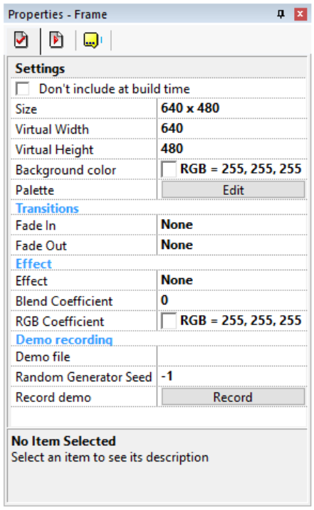
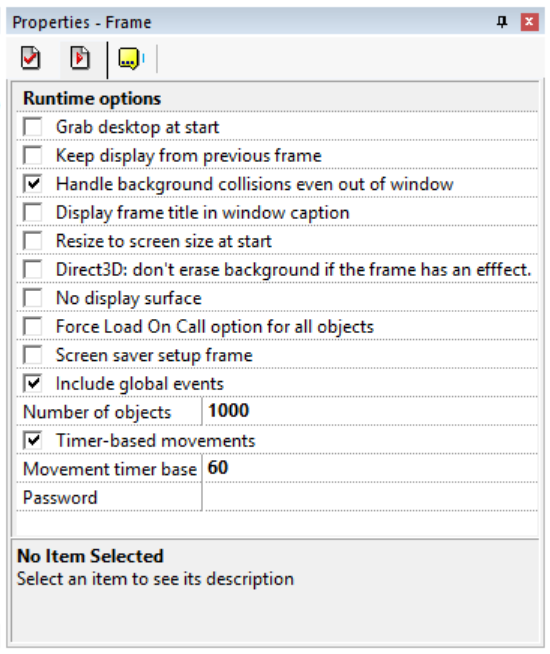
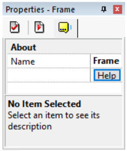
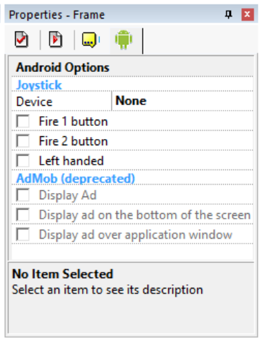
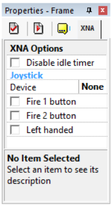
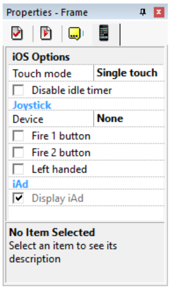
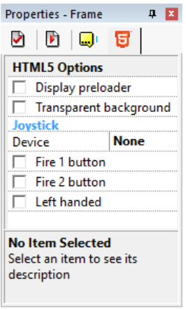
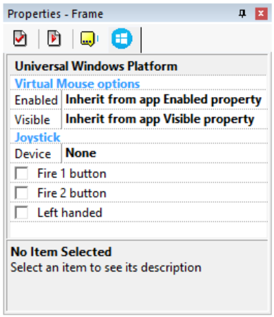

Exporters
Exporters Extensions
Extensions Interface
Interface Chowdren
Chowdren ClickStore
ClickStore Bug Tracker
Bug Tracker| |
This is an archive. |
| See the new ClickWiki at https://clickwiki.net. This version is just an archive for the purposes of migrating content to the new structure. |
Frame Properties
Contents
- 1 Settings
- 2 Runtime Options
- 2.1 Grab desktop at start
- 2.2 Keep display from previous frame
- 2.3 Handle background collisions even out of window
- 2.4 Display frame title in window caption
- 2.5 Resize to screen size at start
- 2.6 No display surface
- 2.7 Force load on call option for all objects
- 2.8 Screen saver setup frame
- 2.9 Include global events
- 2.10 Timer-based movements
- 2.11 Movement timer base
- 2.12 Number of objects
- 2.13 Password
- 3 About
- 4 Android Options
- 5 XNA Options
- 6 iOS Options
- 7 HTML5 Options
- 8 Universal Windows Platform
Settings

The settings folder contains the basic properties of the frame.
{kind=link}
Size
Enter the size of your frame, in pixels. Warning, do not confuse the size of the frame and the size of the application window: the size of the frame is the actual size of the ground where your characters will move.
Virtual Width
Very useful for huge scrolling games: defines the virtual width of the frame. A large virtual width allows you to scroll on a large surface, larger than the frame itself. If the Wrap option is selected in a layer, the background of this layer will wrap automatically when it reaches the real width of the frame. For example, a frame size of 640x480 and a virtual width of 10000 will enable the player to scroll up to the position 10000 on the right without being stopped. If you enter -1 in this field the scrolling is quasi-infinite.
Virtual Height
Same as above, vertically.
Background color
Allows you to choose the background color of the frame.
Palette
The edit button opens a box to edit the 256-color palette of your frame. This palette is used either if your application is in 256 colors, or when you launch your true-color application under a 256-color Windows: all the colors will be remapped using this color palette.
Transitions
Fade in
Defines the fade in a transition of the frame: the effect used to make the frame appear. Click on the Edit button to open the transition setup box.
Fade out
Defines the fade out transition of the frame: the effect used to make the frame disappear. Click on the Edit button to open the transition setup box.
Demo recording
Demo file
Indicates the name of the demo file in which to record the key presses and mouse movements.
Record demo
Launches the frame, recording all the key pressed and mouse movement in the given file. This file can be later replayed with the Play demo file action of the Storyboard object.
Runtime Options

The runtime option folder contains settings used by the runtime for this frame.
{kind=link}
Grab desktop at start
If this option is selected, the background of the frame will be a snapshot of the desktop. You can use this option to make transparent screen-savers.
Keep display from previous frame
If this option is checked, the background of the frame will be the display left by the previous frame.
Handle background collisions even out of window
If you make a scrolling game with a large playfield, you might want to check this option: the collisions with the background will be handled even far from the window.
Display frame title in window caption
Check this option and the frame title will be displayed in the caption area of the window.
Resize to screen size at start
If this option is selected, the frame will be resized to the size of the screen, for example, 1024x768 if your screen is in that resolution. Useful for example for screen savers or for resizable applications.
No display surface
If your frame consists of only Windows controls (like buttons, checkmarks, list boxes) you can save memory at runtime by checking this option: no display surface will be created (making impossible to display graphic objects), but Windows controls will work fine.
Force load on call option for all objects
The load on call option is an option that makes the application load the data relative to one object only when it is used. This option is useful if you have multiple big objects: only the objects in use will be loaded.
Screen saver setup frame
If you are creating a screen saver, check this mark and the current frame will be used as the setup frame of your screensaver: it will be automatically opened when the user chooses the Setup option in the screen saver control panel.
Include global events
By default, the global events (the ones you edit in the properties of the application) are included in each frame. This option allows you to exclude global events from a given frame.
Timer-based movements
When this option is selected, the movement and animation speed of the objects in this frame is based on the exact time difference, making it independent of the machine speed. Note: for compatibility reasons, this option is not selected by default in frames of old applications. If this option is not selected, the speed is based on a frame count, less precise.
Movement timer base
Value (frames per second) of the timer on which movements are based when the Timer-based Movements option is selected. It allows you to define the frame rate of the movements and animations independently from the frame rate of the application.
Number of objects
Enter in this line the maximum number of objects of the frame. From 100 to 20000. Of course, 20000 objects will be slower than 100.
Password
Each frame can contain a password. This password will be useful in runtime: the user can directly jump to a specific frame of the application by entering the password after selecting the Password command in the menu.
About

The About properties contain the name of the frame.
{kind=link}
Name
Enter the name of your frame in this field. This affects the frame selector (in the Navigate toolbar) and the Workspace toolbar.
Android Options

No info available, please add some!
{kind=link}
XNA Options

No info available, please add some!
{kind=link}
iOS Options

No info available, please add some!
{kind=link}
HTML5 Options

No info available, please add some!
{kind=link}
Universal Windows Platform

No info available, please add some!
{kind=link}